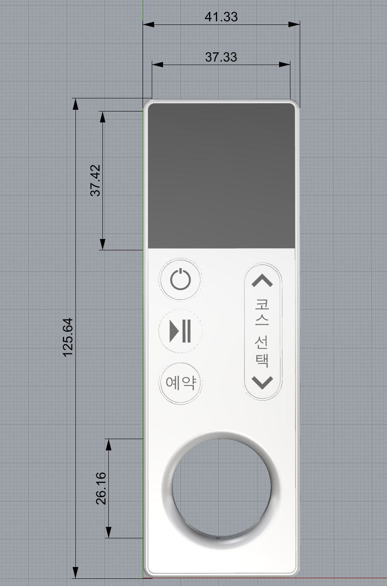
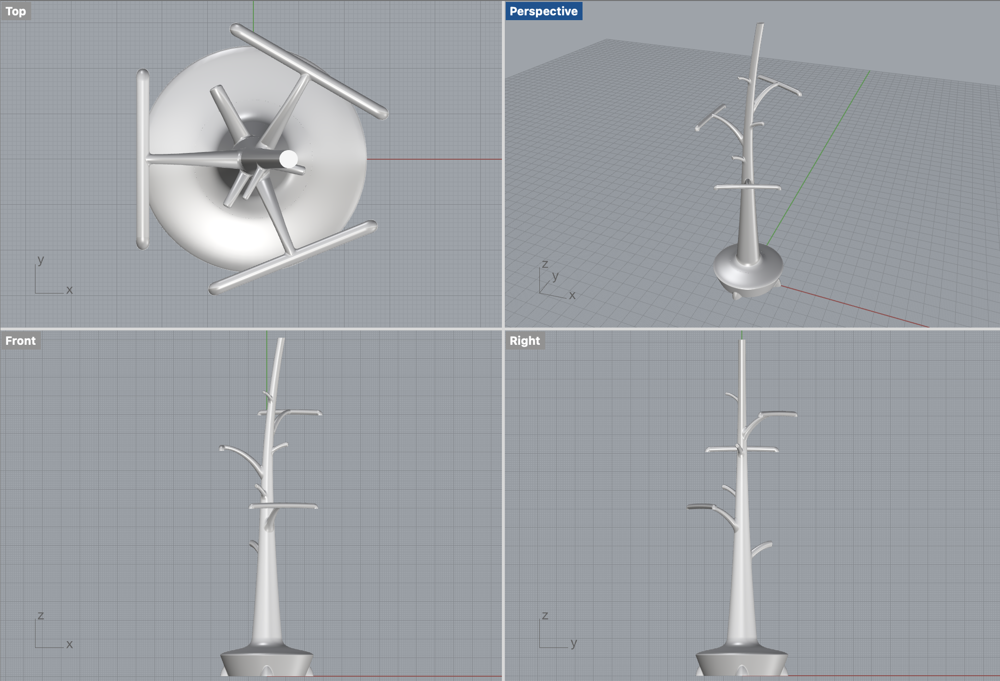
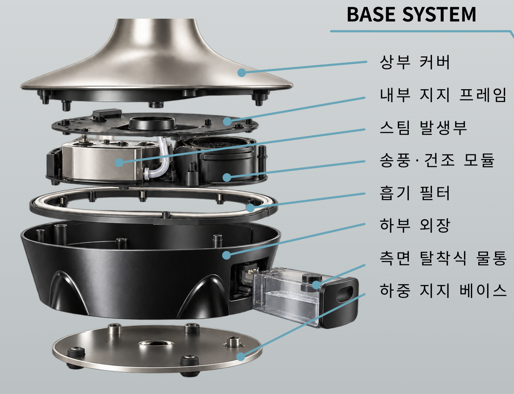
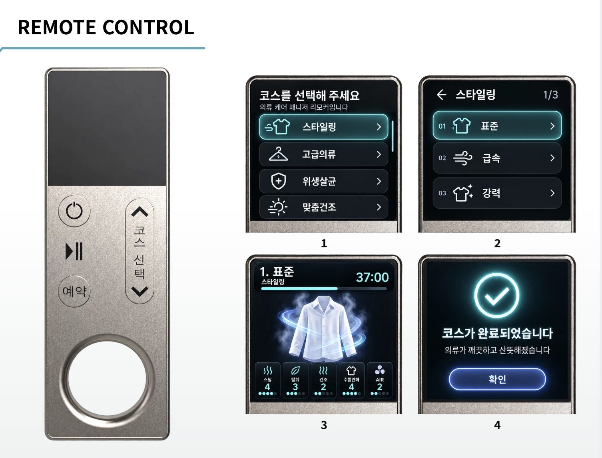
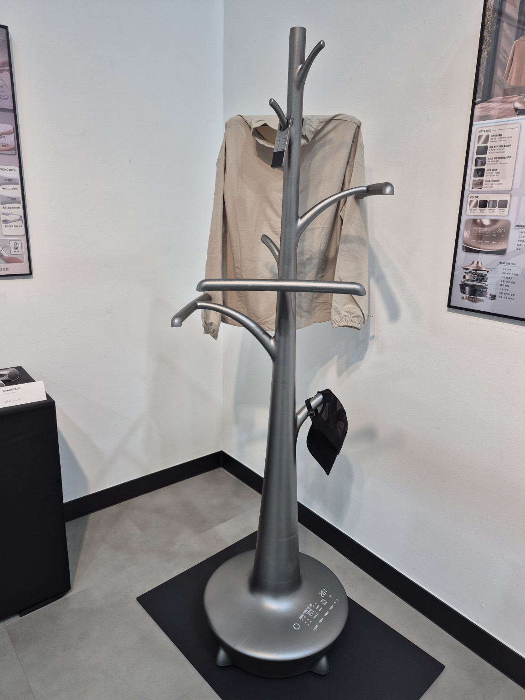
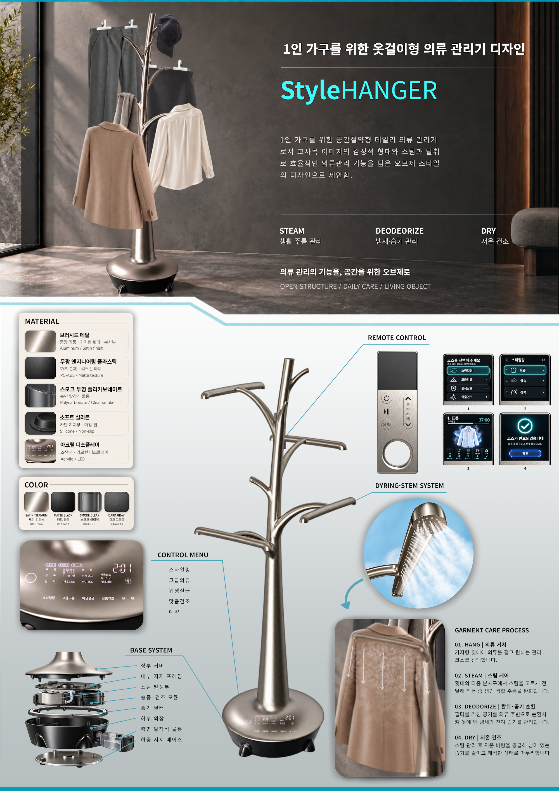

가지형 거치부
높이와 방향이 다른 거치부에 의류와 모자 등 소품을 걸 수 있도록 구성했습니다.
PRODUCT DESIGN
1인 가구를 위한 옷걸이형 의류 관리기
의류 관리의 기능을, 공간을 위한 오브제로.
DESIGN QUESTION
StyleHANGER는 제한된 생활 공간을 효율적으로 사용하고 싶은 1인 가구를 위한 디자인 제안입니다. 옷을 거치하는 일상적인 행동을 출발점으로 삼아, 보관과 의류 관리의 기능을 하나의 제품에 담고자 했습니다.
문을 열고 닫는 수납형 구조 대신 의류가 드러나는 오픈 행거를 선택했습니다. 제품이 사용 중일 때뿐 아니라 사용하지 않을 때에도 실내의 오브제로 보이도록, 고사목을 연상시키는 줄기와 가지의 형태를 적용했습니다.
FORM & USE
높이와 방향이 다른 거치부에 의류와 모자 등 소품을 걸 수 있도록 구성했습니다.
여러 거치부를 하나의 몸체로 연결하며 나무를 닮은 전체 실루엣을 만듭니다.
제품을 받치면서 스팀과 송풍에 필요한 내부 부품을 모으는 영역입니다.
DESIGN DEVELOPMENT
DRAWING STUDY

리모컨의 크기와 화면 영역, 주요 조작 버튼의 배치를 검토한 자료입니다.
RHINO MODELING

거치부는 의류를 받치는 기능, 줄기는 전체를 연결하는 기능, 하부는 지지와 관리를 담당하도록 역할을 나누었습니다. 각 요소가 따로 붙은 기계 부품처럼 보이기보다 하나의 나무 형태로 읽히는 것을 목표로 했습니다.
거치 가능 하중과 전도 안정성, 여러 의류를 함께 걸었을 때의 간섭은 실제 제작 단계에서 확인해야 할 항목입니다.
CARE SYSTEM
하부 베이스에는 스팀 발생부, 송풍·건조 모듈, 흡기 필터, 측면 탈착식 물통을 배치하도록 계획했습니다. 상부 커버와 내부 지지 프레임, 하부 외장 및 지지 베이스가 이 구성 요소를 감싸는 구조입니다.
의류에 스팀을 전달한 뒤 공기를 순환시키고, 저온 바람으로 남은 습기를 줄이는 관리 흐름을 제안합니다. 기능 설명은 콘셉트에 대한 설명이며 실제 성능 시험 결과가 아닙니다.

INTERACTION

사용자가 제품에 가까이 다가가지 않아도 코스를 선택하고 상태를 확인할 수 있도록 별도 리모컨을 구성했습니다. 전원, 시작·정지, 예약, 코스 선택을 물리 버튼과 화면으로 나누어 배치했습니다.
주요 메뉴는 스타일링·고급의류·위생살균·맞춤건조입니다. 주요 메뉴 선택 → 세부 코스 선택 → 진행 상태 확인 → 완료 안내 순서로 화면이 이어집니다. 메뉴 명칭은 제안된 UI의 표기이며 살균 성능 등을 인증한 표현은 아닙니다.
화면을 볼 때마다 다음 행동이 무엇인지 알 수 있도록 선택 화면과 상태 화면을 구분했습니다.
MATERIAL & FINISH
중앙 기둥과 가지형 거치부에 새틴 질감의 금속을 제안해 선의 흐름을 드러냅니다.
하부 본체와 리모컨 바디의 무광 표면은 금속의 반사와 대비를 이룹니다.
측면 탈착식 물통은 반투명 소재로 구성해 다른 외장 요소와 구분합니다.
하단 지지부와 마감에 적용하는 미끄럼 방지 소재를 제안합니다.
소재와 마감은 작품 패널의 CMF 제안 기준이며 양산 사양은 아닙니다.
NEXT QUESTIONS
실제 제품화를 위해서는 스팀의 온도와 분사 범위, 의류 소재별 관리 조건, 소음과 물통 사용성, 전도 안정성을 검증해야 합니다. 열린 구조에서의 관리 효과와 사용자의 안전을 함께 확인하는 과정이 필요합니다.
이 작품에서는 형태·내부 구성·조작 경험을 하나의 사용 시나리오로 연결하는 데 집중했습니다.
EXHIBITION MOCKUP

A TREE FOR YOUR EVERYDAY
옷걸이처럼 자연스럽게 사용하고,
오브제처럼 공간에 어우러지는
의류 관리기를 제안합니다.
PROJECT BOARD
제품의 소재와 색상, 스팀 전달 구조, 리모컨 인터페이스와 의류 관리 과정을 한 장에 정리했습니다.
작품의 전체 구성과 세부 내용을 담은 패널입니다. 원본을 새 창에서 열어 확대해 볼 수 있습니다.
패널 원본 크게 보기 ↗
LET'S TALK ABOUT THE WORK